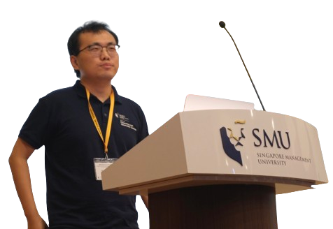

|  |
Xinrun WangAssistant Professor School of Computing and Information Systems Singapore Management University [Email] [GitHub] [Google Scholar] |
[New Paper!] April, 2025: We release the paper Nondeterministic Polynomial-time Problem Challenge: An Ever-Scaling Reasoning Benchmark for LLMs. Comments are welcome!
November, 2023: I will join Singapore Management University (SMU) as an Assistant Professor in July, 2024.
March, 2023: We release our reinforcement learning for FinTech platform TradeMaster.
AgentStudio: A toolkit for building general virtual agents
Longtao Zheng, Zhiyuan Huang, Zhenghai Xue, Xinrun Wang, Bo An, Shuicheng Yan
Proceedings of the 2025 International Conference on Learning Representations (ICLR), 2025
A multimodal foundation agent for financial trading: Tool-augmented, diversified, and generalist
Wentao Zhang, Lingxuan Zhao, Haochong Xia, Shuo Sun, Jiaze Sun, Molei Qin, Xinyi Li, Yuqing Zhao, Yilei Zhao, Xinyu Cai, Longtao Zheng, Xinrun Wang†, Bo An†
Proceedings of the 30th ACM SIGKDD Conference on Knowledge Discovery and Data (KDD), 2024
Configurable mirror descent: Towards a unification of decision making
Pengdeng Li, Shuxin Li*, Chang Yang*, Xinrun Wang†, Shuyue Hu, Xiao Huang, Hau Chan, Bo An
Proceedings of the 41st International Conference on Machine Learning (ICML), 2024
Reinforcement Nash equilibrium solver
Xinrun Wang*, Chang Yang*, Shuxin Li, Pengdeng Li, Xiao Huang, Hau Chan and Bo An
Proceedings of the 33rd International Joint Conference on Artificial Intelligence (IJCAI), 2024
Previous version appears as Proceeding of the 23rd International Conference on Autonomous Agents and Multi-Agent Systems (AAMAS) (Extended Abstract), 2024
Note: Extended abstract is a BAD option, remember to opt out if submitting to AAMAS.
Self-adaptive PSRO: Towards an automatic population-based game solver
Pengdeng Li, Shuxin Li, Chang Yang, Xinrun Wang†, Xiao Huang, Hau Chan, Bo An
Proceedings of the 33rd International Joint Conference on Artificial Intelligence (IJCAI), 2024
Synapse: Trajectory-as-exemplar prompting with memory for computer control
Longtao Zheng, Rundong Wang, Xinrun Wang†, Bo An†
Proceedings of the 2024 International Conference on Learning Representations (ICLR), 2024
True knowledge comes from practice: Aligning large language models with embodied environments via reinforcement learning
Weihao Tan, Wentao Zhang, Shanqi Liu, Longtao Zheng, Xinrun Wang†, Bo An†
Proceedings of the 2024 International Conference on Learning Representations (ICLR), 2024
Greedy sequential execution: Solving homogeneous and heterogeneous cooperative tasks with a unified framework
Shanqi Liu, Dong Xing, Pengjie Gu, Bo An, Yong Liu†, Xinrun Wang†
Proceedings of the 2024 International Conference on Learning Representations (ICLR), 2024
Grasper: A generalist pursuer for pursuit-evasion problems
Pengdeng Li*, Shuxin Li*, Xinrun Wang†, Jakub Cerny, Youzhi Zhang, Stephen McAleer, Hau Chan and Bo An
Proceeding of the 23rd International Conference on Autonomous Agents and Multi-Agent Systems (AAMAS), 2024
Transition-informed reinforcement learning for large-scale Stackelberg mean-field games
Pengdeng Li, Runsheng Yu, Xinrun Wang†, Bo An
Proceedings of the 38th AAAI Conference on Artificial Intelligence (AAAI), 2024
EarnHFT: Efficient hierarchical reinforcement learning for high frequency trading
Molei Qin, Shuo Sun, Wentao Zhang, Haochong Xia, Xinrun Wang†, and Bo An†
Proceedings of the 38th AAAI Conference on Artificial Intelligence (AAAI), 2024
Market-GAN: Adding control to financial market data generation with semantic context
Haochong Xia, Shuo Sun, Xinrun Wang†, and Bo An†
Proceedings of the 38th AAAI Conference on Artificial Intelligence (AAAI), 2024
Offline RL with discrete proxy representations for generalizability in POMDPs
Pengjie Gu, Xinyu Cai, Dong Xing, Xinrun Wang†, Mengchen Zhao†, Bo An
Proceedings of the Thirty-seventh Annual Conference on Neural Information Processing Systems (NeurIPS), 2023
TradeMaster: A holistic quantitative trading platform empowered by reinforcement learning
Shuo Sun, Molei Qin, Wentao Zhang, Haochong Xia, Chuqiao Zong, Jie Ying, Yonggang Xie, Lingxuan Zhao, Xinrun Wang†, Bo An†
Proceedings of the Thirty-seventh Annual Conference on Neural Information Processing Systems (NeurIPS), Dataset and Benchmark Track, 2023
Mastering stock markets with efficient mixture of diversified trading experts
Shuo Sun, Xinrun Wang†, Wanqi Xue, Xiaoxuan Lou, Bo An†
Proceedings of the 29th ACM SIGKDD Conference on Knowledge Discovery and Data (KDD), 2023
PRUDEX-Compass: Towards systematic evaluation of reinforcement learning in financial markets
Shuo Sun, Molei Qin, Xinrun Wang†, and Bo An†
Transactions on Machine Learning Research (TMLR), 2023
Enhancing meta learning via multi-objective soft improvement functions
Runsheng Yu, Weiyu Chen, Xinrun Wang, and James Kwok
The 11th International Conference on Learning Representations (ICLR), 2023
Population-size-aware policy optimization for mean-field games
Pengdeng Li, Xinrun Wang†, Shuxin Li, Hau Chan, and Bo An
The 11th International Conference on Learning Representations (ICLR), 2023
Solving large-scale pursuit-evasion games using pre-trained strategies
Shuxin Li, Xinrun Wang†, Youzhi Zhang†, Wanqi Xue, Jakub Cerny, and Bo An
Proceedings of the 37th AAAI Conference on Artificial Intelligence (AAAI), 2023
DO-GAN: A double oracle framework for generative adversarial networks
Aye Phyu Phyu Aung*, Xinrun Wang*†, Runsheng Yu*, Bo An†, Senthilnath Jayavelu, and Xiaoli Li†
Proceedings of the 2022 IEEE Conference on Computer Vision and Pattern Recognition (CVPR), 2022
RMIX: Learning risk-sensitive policies for cooperative reinforcement learning agents
Wei Qiu, Xinrun Wang, Runsheng Yu, Rundong Wang, Xu He, Bo An, Svetlana Obraztsova, and Zinovi Rabinovich
Proceedings of the 35th Annual Conference on Neural Information Processing Systems (NeurIPS), 2021
Neural regret matching for distributed constraint optimization problems
Yanchen Deng, Runsheng Yu, Xinrun Wang, and Bo An
Proceedings of the 30th International Joint Conference on Artificial Intelligence (IJCAI), 2021
CFR-MIX: Solving imperfect information extensive-form games with combinatorial action space
Shuxin Li, Youzhi Zhang*, Xinrun Wang*, Wanqi Xue, and Bo An
Proceedings of the 30th International Joint Conference on Artificial Intelligence (IJCAI), 2021
We mind your well-being: Preventing depression in uncertain social networks by sequential interventions
Aye Phyu Phyu Aung, Xinrun Wang, Bo An, and Xiaoli Li
Proceedings of the 30th International Conference on Automated Planning and Scheduling (ICAPS), 2020
Learning expensive coordination: An event-based deep RL approach
Zhenyu Shi*, Runsheng Yu*, Xinrun Wang*, Rundong Wang, Youzhi Zhang, Hanjiang Lai, and Bo An
Proceedings of the 2020 International Conference on Learning Representations (ICLR), 2020
When players affect target values: Modeling and solving dynamic partially observable security games
Xinrun Wang, Milind Tambe, Branislav Bosansky, and Bo An
Proceedings of the 10th Conference on Decision and Game Theory for Security (GameSec), 2019
Outstanding Student Paper Award
Who should pay the cost: A game-theoretic model for government subsidized investments to improve national cybersecurity
Xinrun Wang, Bo An, and Hau Chan
Proceedings of the 28th International Joint Conference on Artificial Intelligence (IJCAI), 2019
Catching Captain Jack: Efficient time and space dependent patrols to combat oil-siphoning in international waters
Xinrun Wang, Bo An, Martin Strobel, and Fookwai Kong
Proceedings of the 32nd AAAI Conference on Artificial Intelligence (AAAI), 2018
Stop nuclear smuggling through efficient container inspection
Xinrun Wang, Qingyu Guo, and Bo An
Proceedings of the 16th International Joint Conference on Autonomous Agents and Multi-Agent Systems (AAMAS), 2017
All the methods improving over a base foundation model, i.e., prompt engineering, e.g., CoT, self-reflection, and alignment, should be addressed by a universal method, maybe reinforcement learning (RL).
All decision-making scenarios, including single-agent, cooperative multi-agent, competitive multi-agent, i.e., game theory, and mixed cooperative and competitive scenarios, will be mastered through one algorithm, one model, and even one set of parameters of the model.
The Artificial General Intelligence (AGI) will ultimately be i) self-improving, i.e., searching with regularly retraining, on decisions and alignment through interacting with the (virtually) embodied environments, e.g., video games, and ii) distributed intelligently across massive open-sourced domain-specific models.
The foundation agent would be and should be emerged from foundation model for solving difficult tasks, which will finally be i) a highly capable (multimodal) language model, ii) minimal embodiment for tool creation and using, and iii) optimized via RL to achieve the emergence of reasoning and tool creation/using.
For any given problem A (maybe NP-hard), we can find another NP problem B such that if the foundation model can solve B, it can solve A. Therefore, the AGI/ASI can be achieved by focusing on NP problems only.